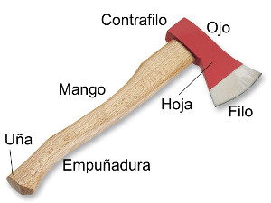
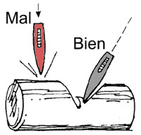
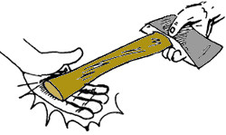
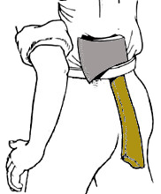
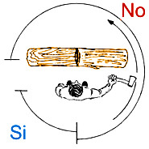
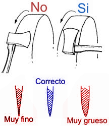
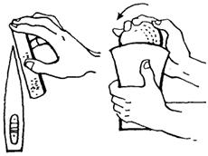
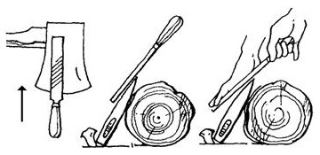

Hachas y Hachuelas
Es una herramienta con un filo metálico que está fijado de forma segura a un mango, generalmente de madera, cuya finalidad es el corte mediante golpes.
El uso típico para el Hacha es cortar leña; pero en el pasado se usaron como armas para la caza y la guerra.
Normas para el uso del Hacha y la Hachuela
El Hacha debe cortar por la fuerza adquirida por su propio peso, limitándote tú sólo a guiar el golpe.
Si está mal afilada o embotada rebotará de la madera, haciéndose inútil y peligrosa.
No debes dar el golpe verticalmente, pues la elasticidad de la madera absorbe la fuerza, sino con una inclinación de 60° aproximadamente, y de un modo alternativo de derecha a izquierda, haciendo un corte en “V”.
No dirijas los golpes hacia la mano o pie que sostenga la madera, pues una desviación ocasionaría un accidente. Coloca la madera a cortar sobre un tronco de soporte.
Cuando la pases a otro, lo harás en la propia mano y no lanzándola desde cierta distancia, confiando en tu buena puntería, ya que un rebote que varíe su dirección, podría causar un accidente gravísimo, esto es de suma importancia.
Al moverte con ella, la colocarás a través del cinturón, con el mango hacia abajo y el filo hacia afuera. No camines o corras con un hacha en la mano.
Antes de comenzar a contar, verifica que no tropezaras con ningún obstáculo en tus movimientos.
Hay que fijarse siempre que esté en buenas condiciones (estado del filo, mango y que el hierro esté bien agarrado al mango acuñado).
Las personas que rodeen al hachador deben encontrarse a 10 metros (como seguridad, en caso de que se escape el hierro o se rompa el mango). Si quieren estar más cerca, deben ubicarse del lado opuesto a la mano con que se sujeta el mango.
Mantenimiento del Hacha y la Hachuela
Cuando no la estés usando, sécala y límpiala cuidadosamente, luego protege el filo guardándola en su funda, sino tiene funda clávala en un tronco seco, cuidando que todo el filo quede dentro de la madera.
No la claves en árboles vivos, (recuerda el 6º artículo de la Ley Scout), ya que además de ir en contra de nuestros principios, por el daño que se causa inecesariamente, la savia humedece y oxida el filo.
No la dejes tirada en el suelo, ni la claves
en la tierra por que se oxida y las piedras dañan el filo.
Esto además es muy inseguro para cualquiera que pase caminando por el lugar,
lo cual pone en evidencia una total falta de
preocupación por el bienestar de tu propia Patrulla, los dirigentes y/o
cualquier otra persona que los visite durate su actividad. Luego de la
salida límpiala, cubre la hoja con una fina capa de grasa y guárdala en
un lugar seco y seguro.
Para afilarla puedes usar máquina, piedra o lima.
a) Cuado la afiles con máquina pon el filo contra el sentido del giro y mantenla mojada o con aceite. Ten cuidado de afilar igual por ambas cara para que no te quede descentrado, muy grueso o muy fino.
b) Al afilarla con piedra de amolar, debes comenzar con una piedra áspera y luego terminar con una más fina (hay piedras que tienen ambos grosores, uno por cada lado), el hacha siempre debe de estar mojada o con aceite durante este proceso.
Debes mover la piedra dando pequeños círculos a cada lado y tener cuidado de no herirte los dedos.
c) Con la lima debes apoyarla firmemente, quedando el filo hacia arriba, mueve la lima en contra del filo, realizando este proceso en ambos lados.

MUY IMPORTANTE… Este procedimiento de afilado se aplica a casi todas las herramientas de corte o excavación, como el Machete, el Pico, la Escardilla, la Pala y la Chícora. Lógicamente debes adaptarlo a la forma propia de cada herramienta, y su uso, ya que algunas NO necesitan un filo tan agudo como el Hacha.